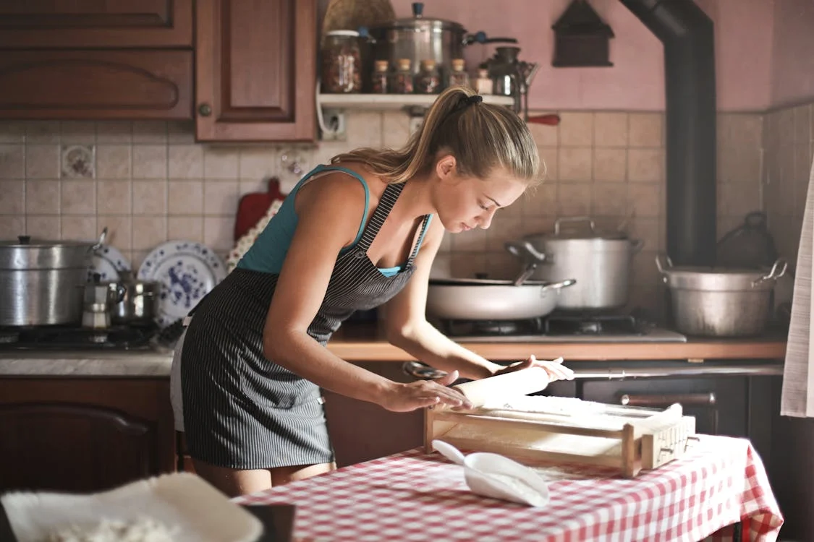
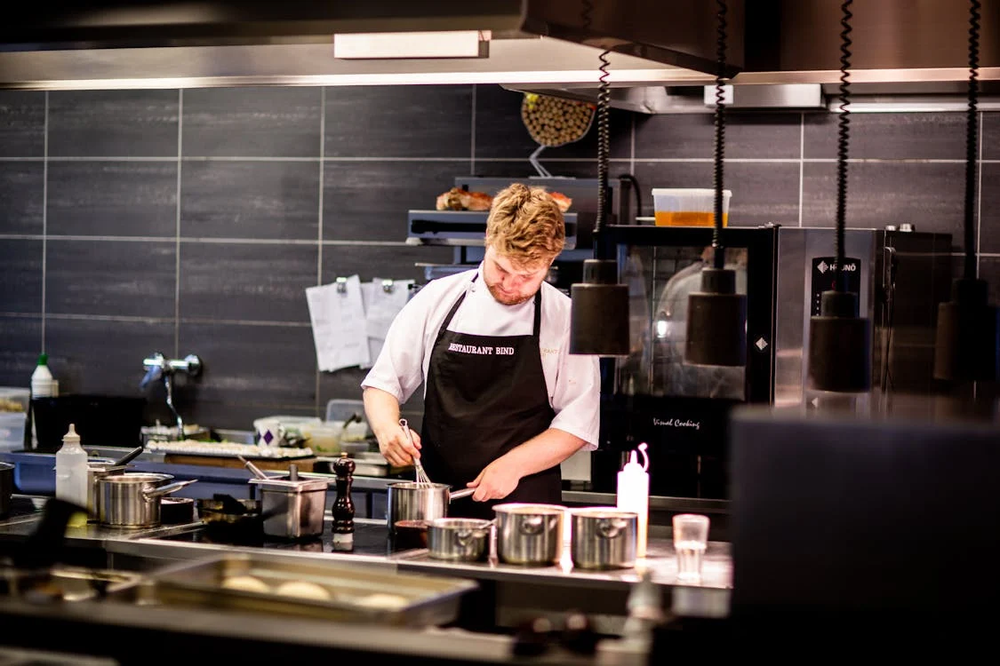
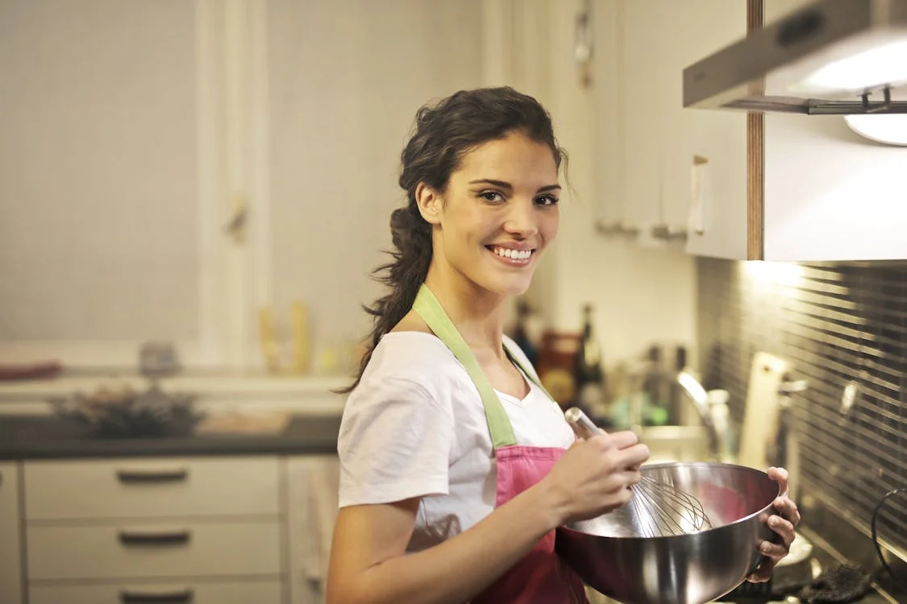
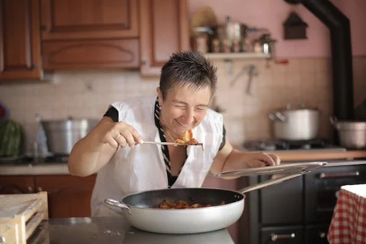
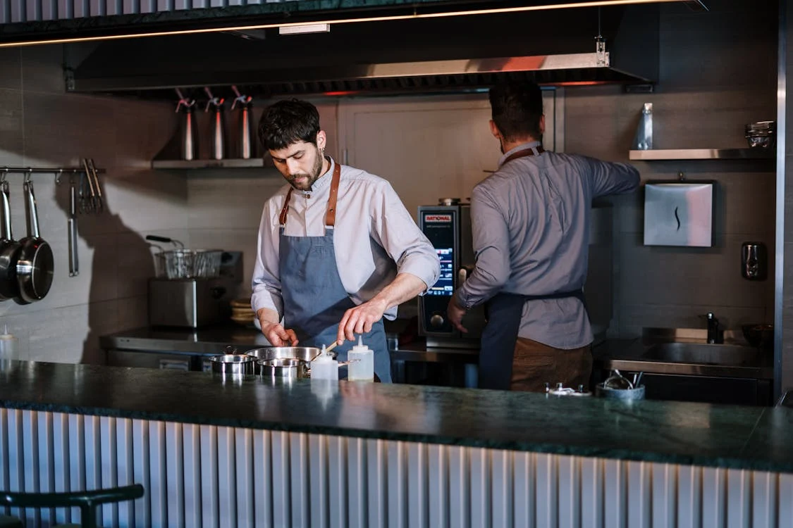
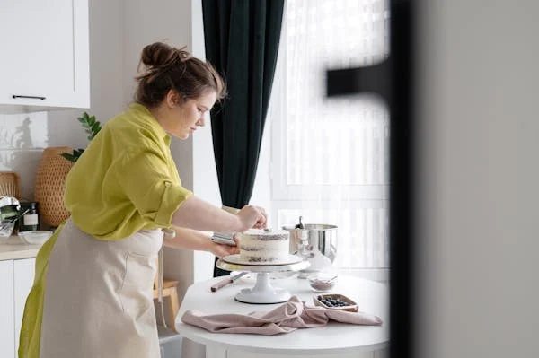

Marta Pérez
Marta es una chef experimentada que dirige su propio restaurante de cocina de autor en el centro de la ciudad. Su especialidad son los platos de fusión que combinan ingredientes locales con técnicas culinarias internacionales.

Carlos Martín
Carlos es un chef joven y prometedor que trabaja como sous chef en un restaurante de alta cocina. Le apasiona la cocina molecular y disfruta experimentando con texturas y sabores inusuales en sus platos.

Sara Rodríguez
Sara es una talentosa pastelera que trabaja en una reconocida pastelería de la ciudad. Sus creaciones son conocidas por su belleza visual y su exquisito sabor, especialmente sus pasteles decorados con detalles elaborados.

Rosario López
Rosario es una cocinera autodidacta que recientemente abrió su propio negocio de comida casera para llevar. Se especializa en platos tradicionales de la cocina española, con recetas que ha perfeccionado a lo largo de los años.

Sergio Bautista
Sergio es un chef ejecutivo en un exclusivo hotel boutique en la costa. Su cocina se centra en ingredientes frescos y locales, creando platos que destacan por su elegancia y sabor refinado.

Antonia Díaz
Antonia es una chef de renombre que ha trabajado en algunos de los mejores restaurantes del país. Actualmente, es consultora gastronómica y viaja por el mundo explorando nuevas tendencias culinarias para inspirar sus proyectos.